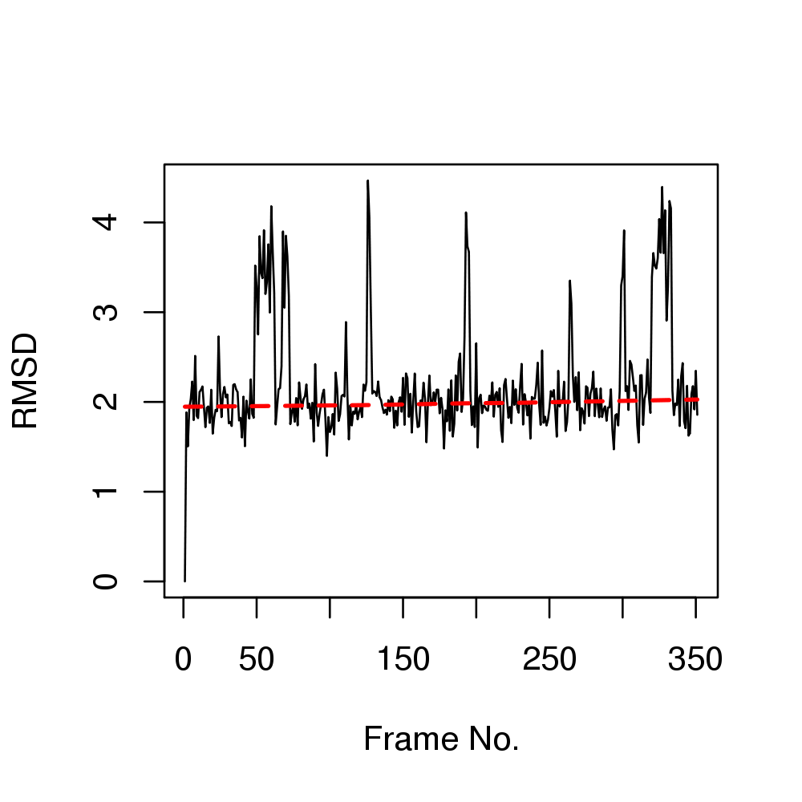
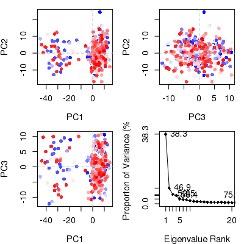
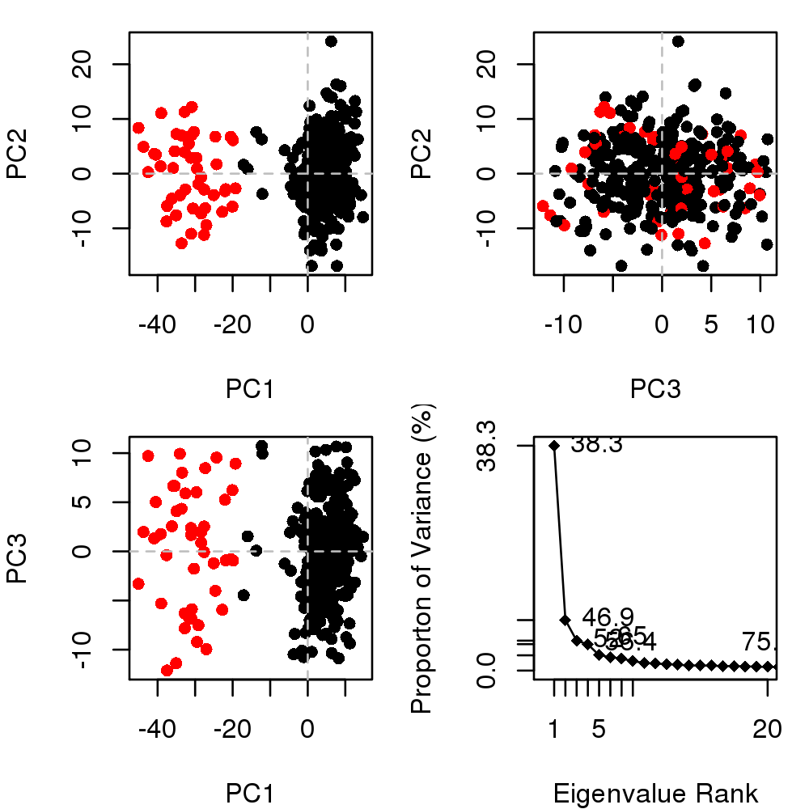
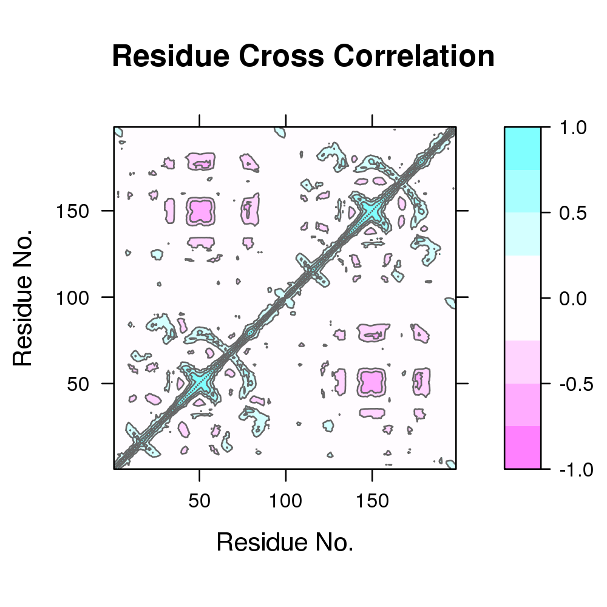

### ### Example of basic molecular dynamics trajectory analysis ### ### Authors Xin-Qiu Yao ### Lars Skjaerven ### Barry J Grant ### require(bio3d); require(graphics); pause <- function() { cat("Press ENTER/RETURN/NEWLINE to continue.") readLines(n=1) invisible() } ############################################# ## # ## Basic analysis of HIVpr trajectory data # ## # ############################################# pause()Press ENTER/RETURN/NEWLINE to continue.# Read example trajectory file trtfile <- system.file("examples/hivp.dcd", package="bio3d") trj <- read.dcd(trtfile)NATOM = 198 NFRAME= 351 ISTART= 0 last = 351 nstep = 351 nfile = 351 NSAVE = 1 NDEGF = 0 version 24 Reading (x100) | | | 0% | | | 1% | |= | 1% | |= | 2% | |== | 2% | |== | 3% | |=== | 4% | |=== | 5% | |==== | 5% | |==== | 6% | |===== | 7% | |===== | 8% | |====== | 8% | |====== | 9% | |======= | 9% | |======= | 10% | |======= | 11% | |======== | 11% | |======== | 12% | |========= | 12% | |========= | 13% | |========== | 14% | |========== | 15% | |=========== | 15% | |=========== | 16% | |============ | 17% | |============ | 18% | |============= | 18% | |============= | 19% | |============== | 19% | |============== | 20% | |============== | 21% | |=============== | 21% | |=============== | 22% | |================ | 22% | |================ | 23% | |================= | 24% | |================= | 25% | |================== | 25% | |================== | 26% | |=================== | 27% | |=================== | 28% | |==================== | 28% | |==================== | 29% | |===================== | 29% | |===================== | 30% | |===================== | 31% | |====================== | 31% | |====================== | 32% | |======================= | 32% | |======================= | 33% | |======================== | 34% | |======================== | 35% | |========================= | 35% | |========================= | 36% | |========================== | 37% | |========================== | 38% | |=========================== | 38% | |=========================== | 39% | |============================ | 39% | |============================ | 40% | |============================ | 41% | |============================= | 41% | |============================= | 42% | |============================== | 42% | |============================== | 43% | |=============================== | 44% | |=============================== | 45% | |================================ | 45% | |================================ | 46% | |================================= | 47% | |================================= | 48% | |================================== | 48% | |================================== | 49% | |=================================== | 49% | |=================================== | 50% | |=================================== | 51% | |==================================== | 51% | |==================================== | 52% | |===================================== | 52% | |===================================== | 53% | |====================================== | 54% | |====================================== | 55% | |======================================= | 55% | |======================================= | 56% | |======================================== | 57% | |======================================== | 58% | |========================================= | 58% | |========================================= | 59% | |========================================== | 59% | |========================================== | 60% | |========================================== | 61% | |=========================================== | 61% | |=========================================== | 62% | |============================================ | 62% | |============================================ | 63% | |============================================= | 64% | |============================================= | 65% | |============================================== | 65% | |============================================== | 66% | |=============================================== | 67% | |=============================================== | 68% | |================================================ | 68% | |================================================ | 69% | |================================================= | 69% | |================================================= | 70% | |================================================= | 71% | |================================================== | 71% | |================================================== | 72% | |=================================================== | 72% | |=================================================== | 73% | |==================================================== | 74% | |==================================================== | 75% | |===================================================== | 75% | |===================================================== | 76% | |====================================================== | 77% | |====================================================== | 78% | |======================================================= | 78% | |======================================================= | 79% | |======================================================== | 79% | |======================================================== | 80% | |======================================================== | 81% | |========================================================= | 81% | |========================================================= | 82% | |========================================================== | 82% | |========================================================== | 83% | |=========================================================== | 84% | |=========================================================== | 85% | |============================================================ | 85% | |============================================================ | 86% | |============================================================= | 87% | |============================================================= | 88% | |============================================================== | 88% | |============================================================== | 89% | |=============================================================== | 89% | |=============================================================== | 90% | |=============================================================== | 91% | |================================================================ | 91% | |================================================================ | 92% | |================================================================= | 92% | |================================================================= | 93% | |================================================================== | 94% | |================================================================== | 95% | |=================================================================== | 95% | |=================================================================== | 96% | |==================================================================== | 97% | |==================================================================== | 98% | |===================================================================== | 98% | |===================================================================== | 99% | |======================================================================| 99% | |======================================================================| 100%# Read the starting PDB file to determine atom correspondence pdbfile <- system.file("examples/hivp.pdb", package="bio3d") pdb <- read.pdb(pdbfile) # Whats in the new pdb object print(pdb)Call: read.pdb(file = pdbfile) Atom Count: 198 Total ATOMs#: 198 Protein ATOMs#: 198 ( Calpha ATOMs#: 198 ) Non-protein ATOMs#: 0 ( residues: ) Chains#: 2 ( values: A B ) Total HETATOMs: 0 Residues HETATOMs#: 0 ( residues: ) Chains#: 0 ( values: ) Sequence: PQITLWQRPLVTIKIGGQLKEALLDTGADDTVLEEMSLPGRWKPKMIGGIGGFIKVRQYD QILIEICGHKAIGTVLVGPTPVNIIGRNLLTQIGCTLNFPQITLWQRPLVTIKIGGQLKE ALLDTGADDTVLEEMSLPGRWKPKMIGGIGGFIKVRQYDQILIEICGHKAIGTVLVGPTP VNIIGRNLLTQIGCTLNF + attr: atom, het, helix, sheet, seqres, xyz, xyz.models, calpha, callpause()Press ENTER/RETURN/NEWLINE to continue.# How many rows (frames) and columns (coords) present in trj dim(trj)[1] 351 594ncol(trj) == length(pdb$xyz)[1] TRUEpause()Press ENTER/RETURN/NEWLINE to continue.# Trajectory Frame Superposition on Calpha atoms ca.inds <- atom.select(pdb, elety = "CA")Build selection from input components segid chain resno resid eleno elety Stest "" "" "" "" "" "CA" Natom "198" "198" "198" "198" "198" "198" * Selected a total of: 198 intersecting atoms *xyz <- fit.xyz(fixed = pdb$xyz, mobile = trj, fixed.inds = ca.inds$xyz, mobile.inds = ca.inds$xyz) # Root Mean Square Deviation (RMSD) rd <- rmsd(xyz[1, ca.inds$xyz], xyz[, ca.inds$xyz])Warning message: No indices provided, using the 198 non NA positionsplot(rd, typ = "l", ylab = "RMSD", xlab = "Frame No.")points(lowess(rd), typ = "l", col = "red", lty = 2, lwd = 2)
summary(rd)Min. 1st Qu. Median Mean 3rd Qu. Max. 0.000 1.852 2.020 2.183 2.216 4.468pause()Press ENTER/RETURN/NEWLINE to continue.# Root Mean Squared Fluctuations (RMSF) rf <- rmsf(xyz[, ca.inds$xyz]) plot(rf, ylab = "RMSF", xlab = "Residue Position", typ="l")pause()Press ENTER/RETURN/NEWLINE to continue.# Principal Component Analysis pc <- pca.xyz(xyz[, ca.inds$xyz]) plot(pc, col = bwr.colors(nrow(xyz)))
pause()Press ENTER/RETURN/NEWLINE to continue.# Cluster in PC space hc <- hclust(dist(pc$z[, 1:2])) grps <- cutree(hc, k = 2) plot(pc, col = grps)
pause()Press ENTER/RETURN/NEWLINE to continue.# Cross-Correlation Analysis cij <- dccm(xyz[, ca.inds$xyz]) plot(cij)
## view.dccm(cij, pdb, launch = TRUE)